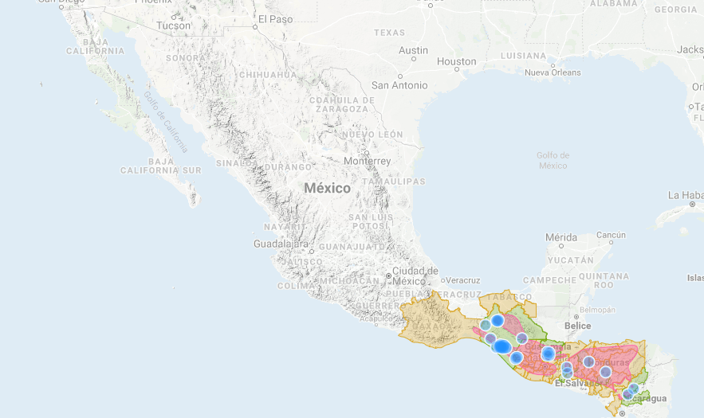
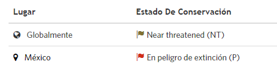

Descripción
El quetzal era un ave sagrada para algunas culturas antiguas del centro y sur de México. De hecho, los aztecas la asociaban con la deidad de Quetzalcóatl representada por una serpiente
emplumada, y los mayas con Kukulkán, que era muy parecido.
Es un ave de mediano tamaño de 36–40 cm de largo. El macho tiene además una cola serpentina de hasta 65 cm de largo. Tiene un peso de aproximadamente 210 g. Es el mayor representante
del orden de los trogoniformes.
El plumaje del cuerpo es de color verde iridiscente, con reflejos que varían de oro hasta azul-violeta, con el pecho y vientre de color rojo carmesí intenso. Las plumas coberteras
superiores de la cola son verdes y muy largas, escondiendo la cola, y en los machos en la temporada de cría son más largas que el resto del cuerpo. Las coberteras primarias de las
alas también son inusualmente largas y dan una apariencia de flecos. El macho tiene una cresta erizada en la cabeza, que consiste de plumas erectas y comprimidas unas con otras. El pico,
que está parcialmente cubierto de plumas filamentosas verdes, es de color amarillo en los machos adultos y negro en las hembras.
Hábitat
Se distribuye desde el sur de México hasta el oeste de Panamá, incluidos Guatemala, Honduras, El Salvador, Nicaragua y Costa Rica. En su área de distribución vive únicamente en
bosques nubosos montanos entre 1000 y 3000 msnm.

Situación actual

Chordata: Son un filo del reino animal caracterizado por la presencia de una cuerda dorsal o notocorda. Trogoniformes: Familia del orden de los Trogoniformes. Engloba a seis géneros: Apaloderma, Pharomachrus (quetzales), Euptilotis, Priotelus, Trogon y Harpactes.
 Aves en peligro de extinción
Aves en peligro de extinción